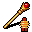

金縛りのワンド Wand of paralysis
英語版 CrawlWiki の記事「Wand of paralysis」(0.30 向け、2023-09-22 版)の翻訳です。原文の著者は編集履歴をご覧ください。
この記事は 0.30 の時点の内容で、最新の 0.34 とは違うところがあるかもしれません。
| 種類 | ワンド |
|---|---|
| 名前 | 金縛りのワンド |
| アイコン |  |

| 生き物を手足ひとつ動かせない、身動きの取れない状態にすることができる魔法の道具だ。 |
金縛りのワンドを使うと、対象 1 体を麻痺させようとする。麻痺した相手は数ターンのあいだ行動できず、EV が 0 になり、急所攻撃を受けやすくなる。成功するには対象の意志力を上回る必要があるが、発動スキルが高いほど成功しやすくなる。
このワンドと魅了のワンドは排他で、1 回のゲームではどちらか一方しか出ない。
戦略
麻痺はとても強力な効果だ。
- 敵の攻撃を数ターン止められるだけでも価値がある。敵に囲まれているときは、1 ターンに受ける攻撃が 1 回減るだけで大きな違いになる。通路なら、弱い敵を麻痺させて後ろの連中をせき止めることもできる。何回かただで殴れれば、それが勝敗を分けることもある。
- 麻痺した敵は EV が 0 になり、上位の急所攻撃を受ける。近接戦闘がそこそこできるキャラクターなら、効果が切れる前に(単体の)モンスターはほぼ何でも倒せるだろう。隠密はいらない。
危険な相手でも意志力の低いものは多く、ユニークにさえいる。双頭のオーガ、巨大赤色蜂、ネッソス、ソーニャなどがそうだ。
小技
- 麻痺がモンスターに強力なのと同じで、あなたにとっても麻痺は強烈だ。一度麻痺を食らえば、HP が満タンからでも死ぬことがある。
- 脆弱の巻物を使えば、実質的に無力化できる相手がずっと増える。できれば、あなたに呪術をかけてくるモンスターがいないときに読むといい。マーラやパーギットのような大物も、脆弱→麻痺の流れで完全に止められる。もちろん脆弱は自分の意志力も下げるので、いつもの危険には気をつけること。
変更履歴
- 0.29 で、このワンドは魅了のワンドと排他になった。
| ワンド |
|---|
| 強酸 / 光 / 水銀 • 吹雪 / 根縛り / 歪曲 • 魅了 / 金縛り 掘削 • 火炎 • 精神破壊 • 変化 |